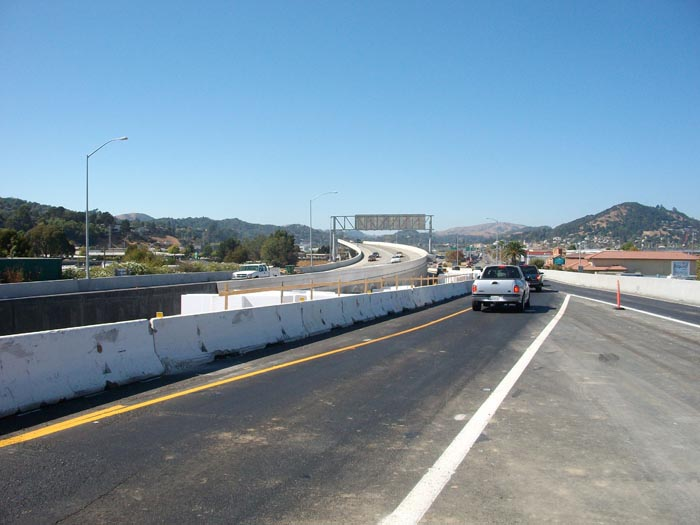
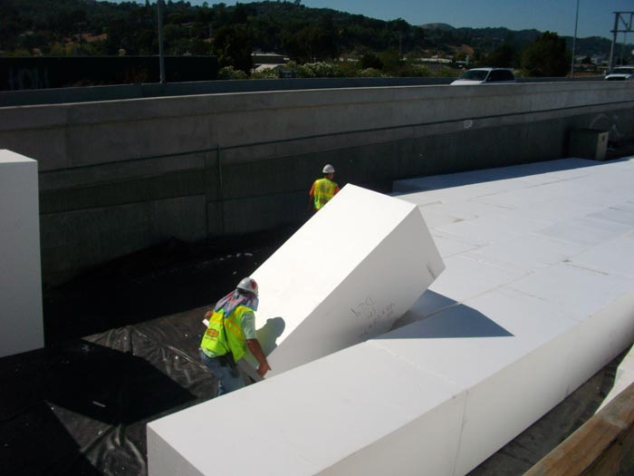
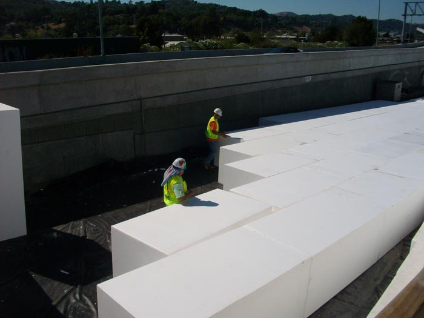
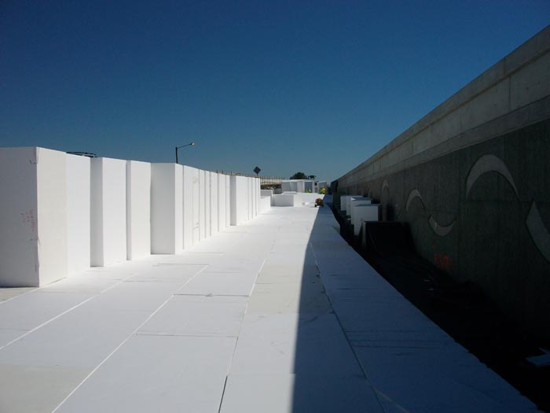
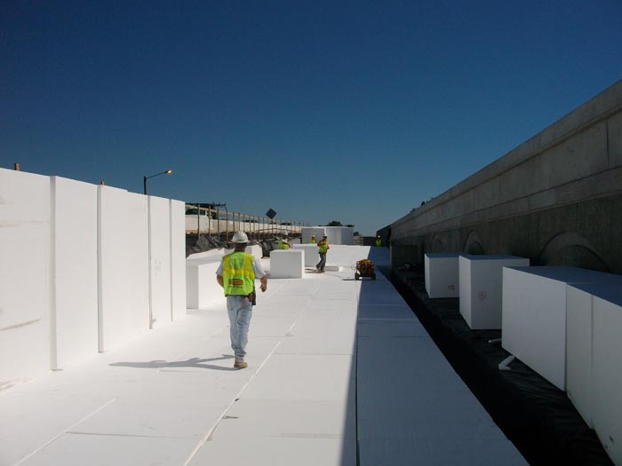
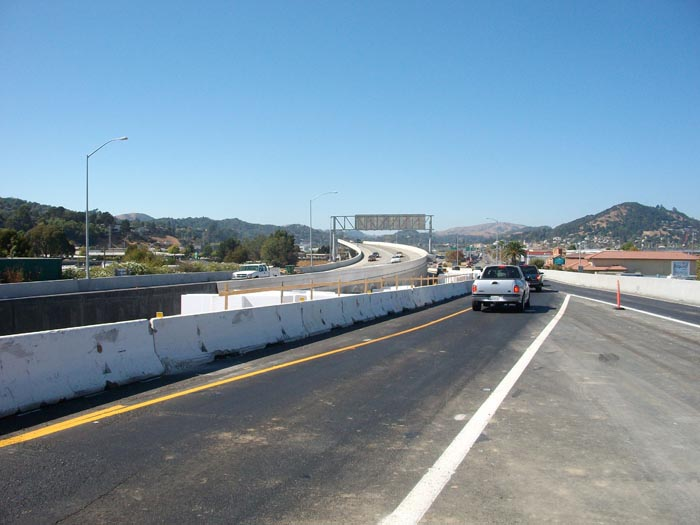
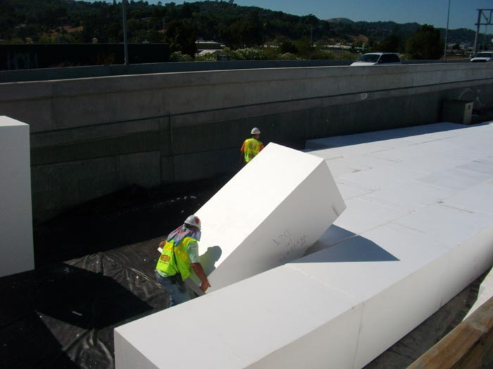
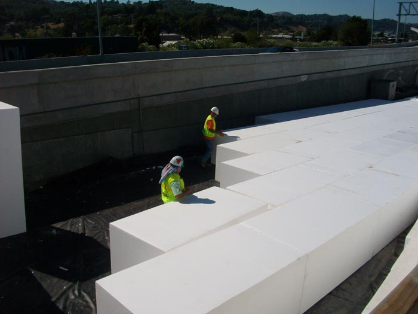
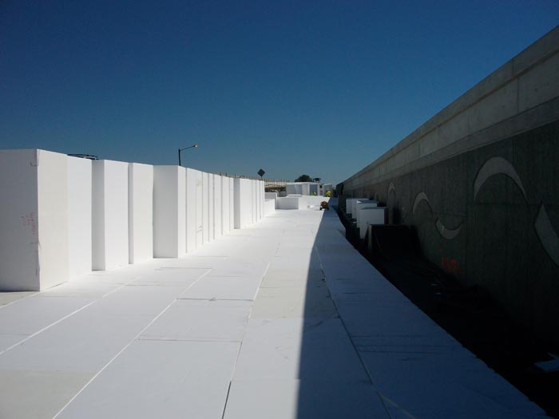
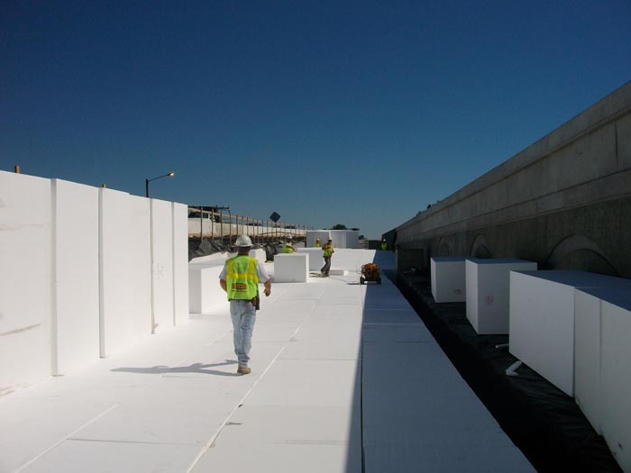

Geofoam
Geofoam FANOSA® son bloques de Poliestireno Expandido utilizados como material de relleno para diferentes aplicaciones y en diversos proyectos de ingeniería geotécnica, como la construcción de pistas, carreteras, puentes, etc.


Geofoam FANOSA® son bloques de Poliestireno Expandido utilizados como material de relleno para diferentes aplicaciones y en diversos proyectos de ingeniería geotécnica, como la construcción de pistas, carreteras, puentes, etc.
Construir con Geofoam tiene muchas ventajas, estas son solo algunas de las principales
Toda la información sobre nuestros productos la podrás encontrar en los archivos descargables que tenemos para ti.
Desde una recámara hasta toda una nave industrial, las obras hechas con Geofoam pueden ser tan diferentes que reunimos una galería con algunas de ellas.
 








